The spotlights streak across over 500 festively dressed attendees as the music swells and the glitter ball sends sparkles all around. The Park West is completely sold out and the cheering is deafening! It’s the 49th Non-Equity Jeff Awards! These awards may not be on your award season calendar like the Grammys or the Oscars, but they should be. The annual celebration highlights excellence in Chicago’s internationally famous theater community for those production companies not working under the Actors Equity contract. The annual Equity Jeff Awards were held last October.
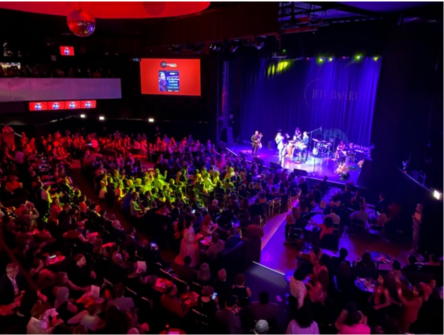
If you’d prefer to watch a musical or play in a storefront theater seating under 100 rather than join a crowd of a 1000 or more, in Chicago you have ample opportunity to sample both and everything in between. Chicago is internationally known for its theater, both Equity and Non-Equity. The Equity label refers to the Actors Equity contract under which the larger Chicago theaters operate. Non-Equity theaters are generally smaller and often more adventurous in their programming.
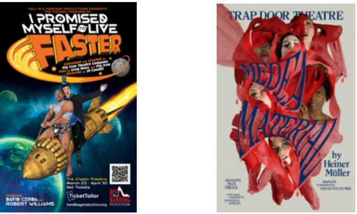
Chicago’s Non-Equity theaters and their fans gathered March 27 for the first time in nearly four years since the beginning of Covid restrictions (many theaters still require masks) for the 2023 Non-Equity Joseph Jefferson Awards to celebrate theatrical excellence. Because of Covid, the Non-Equity judging season was extended from July 1, 2021, to December 31, 2022.
There are over 100 Non-Equity theaters in Chicago, a number hard to confirm since new theaters open frequently. In the aftermath of Covid, 52 companies produced enough shows to be considered this year, a total of 106 productions. Of these, 49 productions from 30 theater companies were recommended by opening night screening teams. These productions were then seen by the Jeff Committee and considered for awards. All 30 theaters received at least one nomination comprising a total of 167 theater artists across 28 categories. The Jeff Committee stresses that it awards “excellence” and declines to use the terms “best” or “winner.”
Receiving a Jeff Award is particularly important to a small theater. Publicity budgets are small, and the Jeff stamp of approval draws new audiences. For actors, it may help them make a move to a larger theater if that’s their goal, according to John Glover, Chair of the Jeff Awards. “For most early to midcareer artists it is a huge boost for them to be able to communicate in bios, in their resumes, to say that they are an actual Jeff Award recipient.”
This year’s nominees represent a wide variety of productions from the familiar Who’s Afraid of Virginia Wolf (Invictus Theatre) to the premier of Malapert Love at The Artistic Home. The choices are grounded in the individual theater’s mission. Invictus Theatre, for example, has the goal of creating “theater that promotes a better understanding of language: its poetry, its rhythm, its resonance, through diverse works by diverse artists.” The Artistic Home seeks to “readdress the classics and explore new works with passion…we give artists a home where they can shape, develop and strengthen their artistic voice.”
But there are other criteria that impact the choice, said Scot Kokandy, president of Kokandy Production: “We basically sit down with maybe a wish list and then after that wish list we have to send out royalty rights requests… When we form our initial list, we like to contrast, we don’t want to be known for always doing the funny or the serious. We kind of like the variety… and we want to appeal to as many people as possible.”
Kokandy Productions took home the most Jeffs of the evening with six awards for its production of Sweeney Todd. “For me, it really makes me excited that the artists get recognized…that an actor or designer has been acknowledged by the community in Chicago,” said Kokandy.
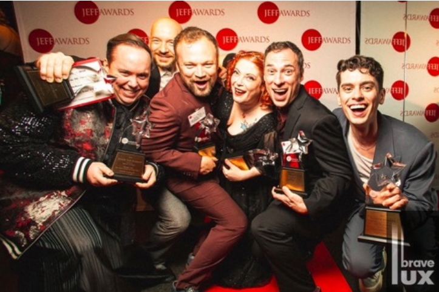
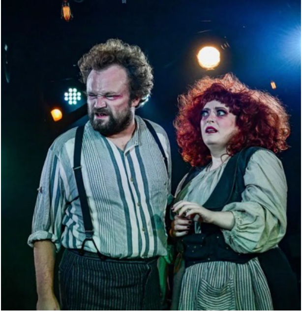
Glover: “The Jeff Awards are validation of really what our mission is… and that’s to acknowledge theatrical excellence in Chicagoland area. It’s a reinforcement and validation of what we do and the amount of time we spend evaluating productions.” Some 50 Jeff Committee members do spend significant time doing just that, seeing about 200 productions a year. Members may be in the theater community – playwrights, actors, teachers, publicists – or may not – insurance brokers and lawyers, for example; all are knowledgeable and dedicated theater enthusiasts. The committee values diversity in all areas. Many Jeff members dressed creatively to celebrate the evening.
|
Jeff committee member Preston Cropp |
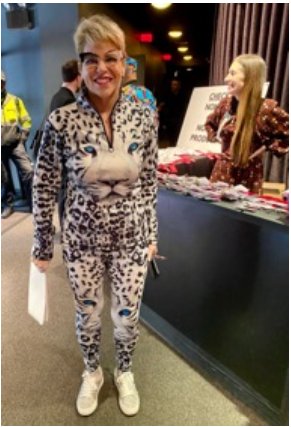 Jeff member Suzanne Ross |
Creative dressing was a major theme of the evening beginning with Parker Guidry, actor, singer, and dancer, who interviewed guests as they arrived on the red carpet. From sequins, feathers, and tulle to leather, silk, and conservative suits, everyone created his/her/their own dress code.
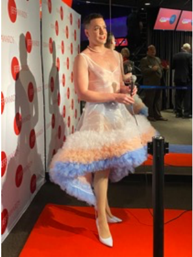 Parker Guidry |
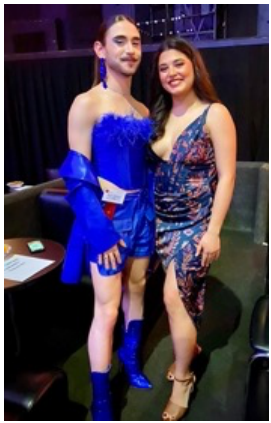 Quinn Simmons, Alix Rhode, Theo Ubique |
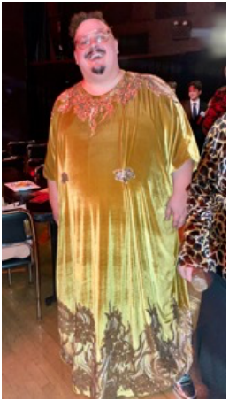 Christopher Pazdernik Producing Director, Theo Ubique |
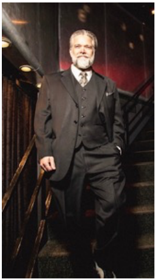 Timothy Green xxxxxxxxxxxxx Photo: BraveLux xxxx |
Hosted by Chicago entertainers Honey West and Mitchell J. Fain, the awards show flowed smoothly with award announcements interspersed with musical numbers from nominated shows.
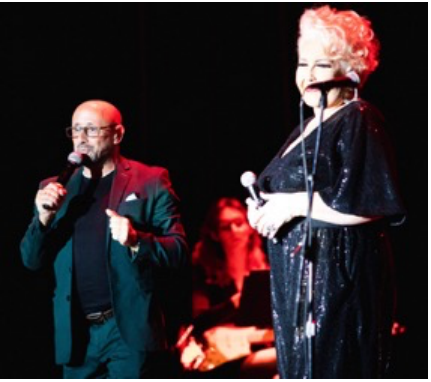
Similar to the Oscars, the evening ended with awarding excellence in Production of a Musical or Revue, and excellence in Production of a Play. Receiving top Musical honors was Sweeney Todd, The Demon Barber of Fleet Street (Kokandy Production), plus awards for Director of a Musical, Performer in a Principal in a Musical ( 2 leads), Performer in a Supporting Role in a Musical, and Music Direction). Who’s Afraid of Virginia Wolf (Invictus Theatre Company) scored in the Production of a Play with additional awards for Director of a Play, Performer in a Supporting Role in a Play, and Scenic Design.
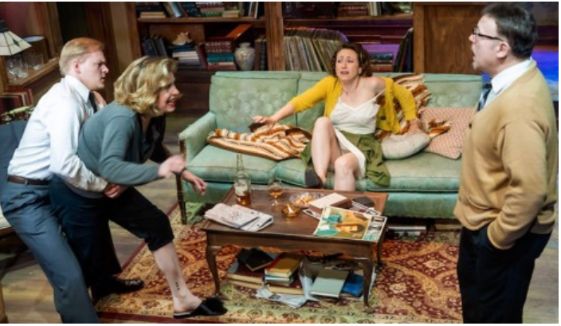
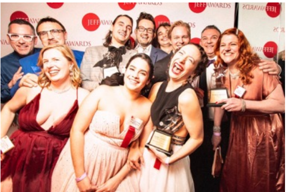
The new category of Short Run (9-17 performances) also included the Production for a Play award for Tebas Land from the Chicago Latino Theater Alliance in collaboration with the National Museum of Mexican Art. A full list of this year’s award recipients can be found at www.jeffawards.org.
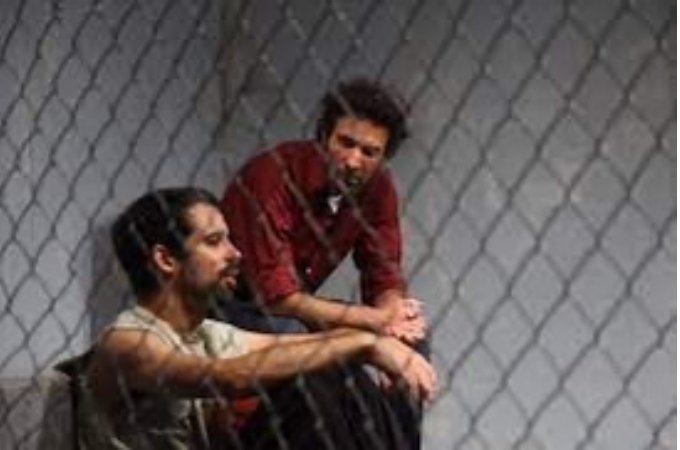
In addition to awards for theatrical talent, the late arts activist Myrna Salazar was honored with a Special Non-Equity Award for her fierce advocacy for Latino artists. Cofounder and Executive Director of CLATA (Chicago Latino Theater Alliance), she also cofounded Destinos, the Chicago International Latino Theater Festival.
Glover enthusiastically announced a new initiative of the Jeff Committee, the Jeff Impact Fellowship. In its first year, the Fellowship will provide $10,000 each to two early to mid-career theater artists of color in support of their professional and personal development.
A first-time Awards attendee relatively new to the small theater scene told me, “I was wowed by the glamour and sophistication of the event…. The scheduling and pacing of the events seemed to be better than the Oscars. It was a festive night on the town for people who work in storefront theaters!”
Jeff Committee members are already viewing performances of new Non-Equity productions in anticipation of next year’s milestone 50th Anniversary awards show. As a Jeff Committee member, I’m looking forward to a year of innovative, entertaining, and challenging theater. If you haven’t sampled Chicago’s smaller theaters, let me encourage you to join me!